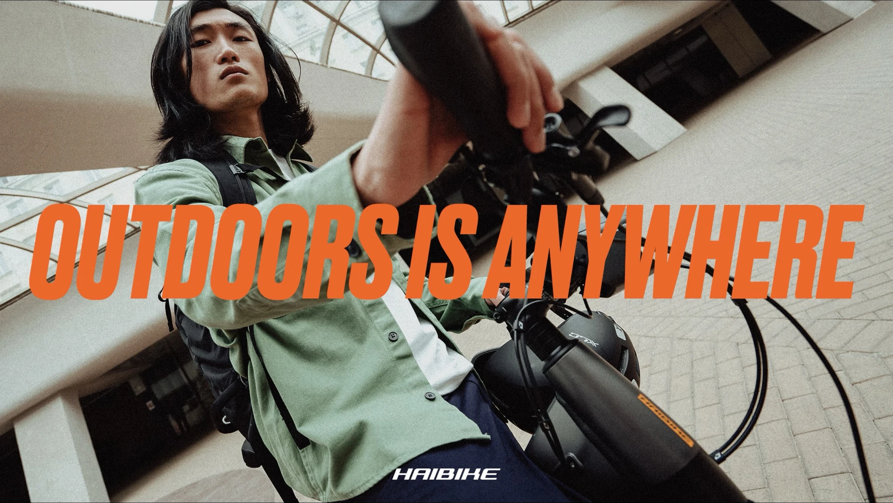
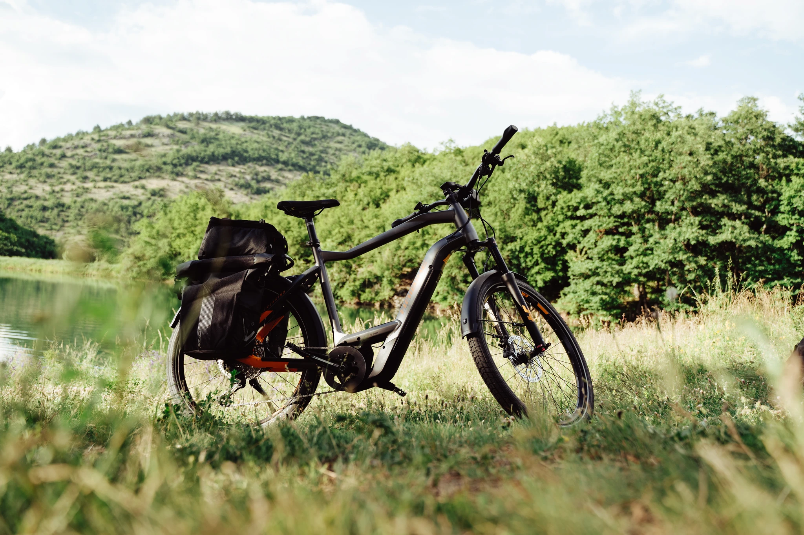

Haibike —
Outdoors is Anywhere

Challenge
Haibike was launching a new eTrekking bike into a category with an image problem. Every brand communicated the same way — product-focused, earnest, and squarely aimed at what the Dutch would call "ANWB-koppels". For the creative city dwellers Haibike actually wanted to reach, trekking bikes were not their thing. Which left room for a challenger to do something different.
Approach
The insight was that the outdoors had been democratised. It's no longer a fixed destination requiring the right gear and a planned route — it's wherever you happen to go once you step outside. A commute with a scenic detour. A weekend ride along the canal. A shortcut through the park that takes considerably longer than planned. The campaign replaced conventional trekking framing with a new mindset: outdoors is anywhere. A new visual identity and launch campaign brought this to life in a way the category hadn't tried before — urban, unconventional, and aimed at people who would never have clicked on a trekking bike ad before this one.
Outcome
A launch campaign that repositioned an entire product category for a new generation of riders, and gave Haibike a visual language and strategic platform to build from.
